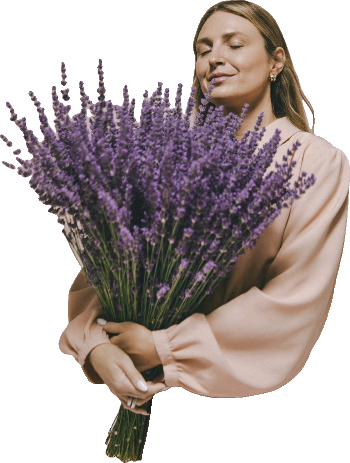
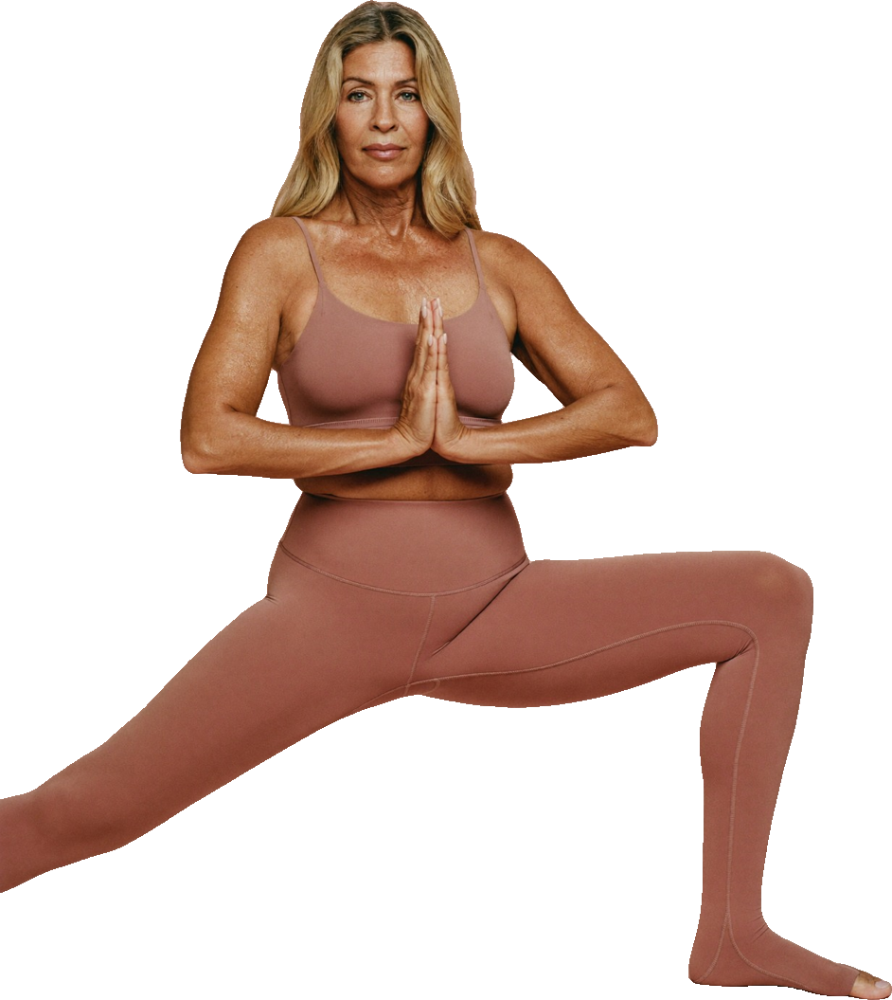
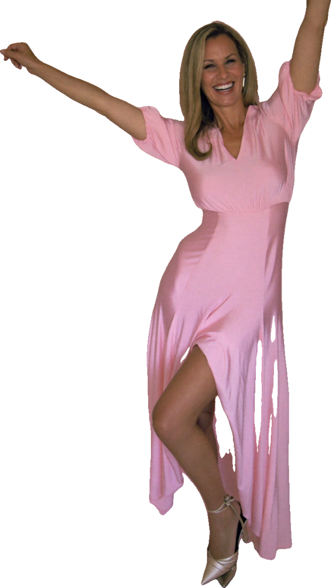

Sin miedo Con fuentes Con cariñoCalores que interrumpen reuniones, noches en vela, cambios de ánimo, dudas sobre la terapia hormonal y conversaciones difíciles en casa y en el trabajo. PAUSA te explica qué le pasa a tu cuerpo con datos verificados, te prepara para tu consulta y te ayuda a compartir la responsabilidad con quienes te rodean.